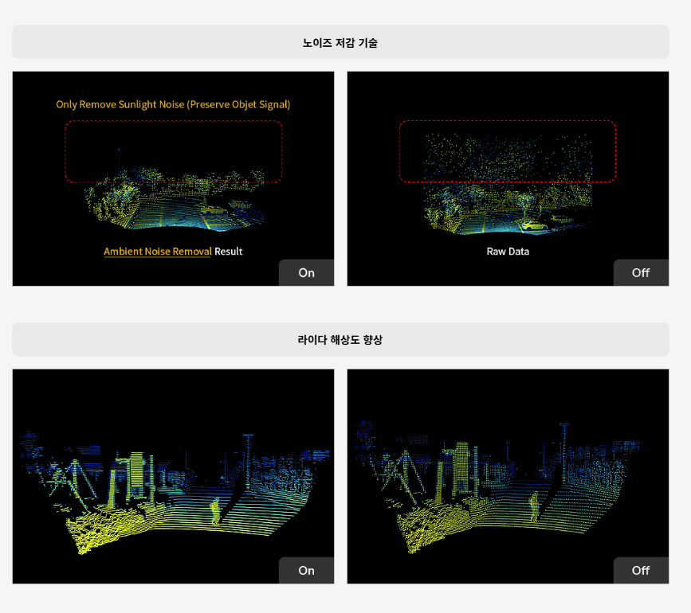

카메라와 유사한 완전 고정형 구조를 채택하고 이에 더불어 독자적인 구조설계와 기술혁신을 통해 진동 및 충격에 대한 제품의 안정성을 확보하고 생산성과 품질을 극대화하였습니다.
이러한 첨단 기술의 집약체인 ML 제품은 자율주행뿐만 아니라 3차원 공간 정보가 있어야 하는 다양한 산업 분야에 활용될 수 있어 향후 미래 산업에 최적의 솔루션을 제공하는 필수 센서로 자리매김하였습니다.

ML 제품은 H/W에 대한 혁신뿐만 아니라 고도화된 신호처리 기술을 내재하고 있습니다. 이에 따라 보다 정밀하고 신뢰도 높은 데이터를 생성하며 아울러 Colorization, Super Resolution, Multi Echo 등과 같은 차별화된 SW 기능을 제공합니다. 이러한 기술을 기반으로 다양한 산업에서 필요로 하는 높은 품질의 라이다를 공급하고 있습니다.
다중 센서 데이터 시공간 동기화 기술

라이다 3차원 데이터 분석 및 처리 기술
관심 영역 추출 및 기하보정 기술
3D 데이터 통계 분석 및 군집화 기술
3D 라이다 기반 지능형 실외 무인 주차 안내 시스템